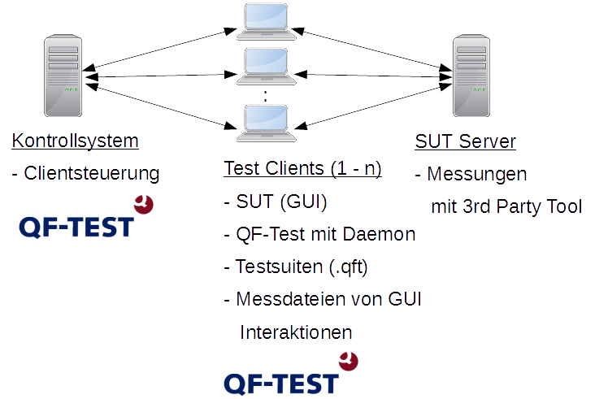
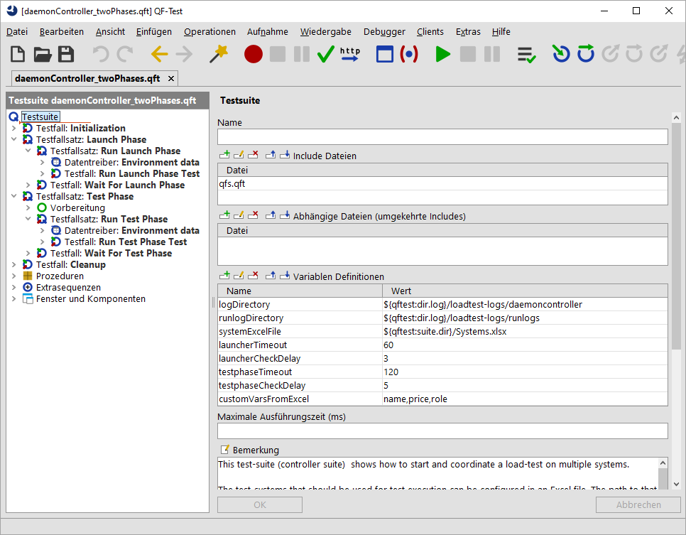
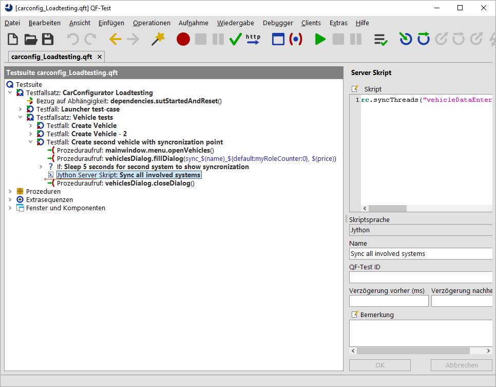

| Version 6.0.3 |
 Video: Lasttests
Video: Lasttests
Neben funktionalen und Systemtests eignet sich QF-Test auch zur Durchführung von Lasttests, Stresstests oder Performance-Tests. Diese Art von Tests eignet sich auch um die Stabilität Ihrer gesamten Server/Client Umgebung zu prüfen.
Dabei wird die Performance einer Server Anwendung getestet, indem eine Anzahl von GUI-Clients gleichzeitig ausgeführt wird. Zusätzlich kann mit QF-Test die, vom Benutzer erfahrene, Zeit an der grafischen Oberfläche, die so genannte End-To-End Zeit, gemessen werden. Im weiteren Verlauf des Kapitels wird der Einfachheit halber nur noch der Begriff Lasttests verwendet.
Es gibt verschiedene Möglichkeiten, Lasttests durchzuführen. Im Gegensatz zu QF-Test arbeiten die meisten davon nicht mit echten GUI-Clients, sondern setzen direkt auf der Protokollschicht zwischen GUI-Client und Server auf, z.B. indem sie HTTP Anfragen absetzen oder mittels RMI oder anderer Middleware Methoden im Server aufrufen.
Protokoll-basierte und GUI-basierte Lasttests haben jeweils verschiedene Vor- und Nachteile:
In einigen Fällen kann es durchaus sinnvoll sein, beide Welten zu kombinieren. Sie können z.B. auf einigen System GUI Tests starten, die die End-To-End Zeiten ermitteln und parallel dazu führen Sie protokoll-basierte Tests aus um Last zu erzeugen.
Zusammenfassend lässt sich sagen, dass GUI-basierte Lasttests sehr nützlich und effizient sein können (insbesondere wenn sich funktionale Tests wiederverwenden lassen), vorausgesetzt, es steht ausreichend Hardware zur Verfügung.
Abschließend finden Sie hier noch ein Architekturbild, welches alle involvierten Systeme eines GUI-basierten Lasttests zeigt:
|
|  | ||
|
| Abbildung 29.1: Lasttest Szenario | ||
Dieses Thema ist ein sehr anspruchsvolles. Daher liefert QF-Test eine Demolösung mit,
die Sie auch als Ausgangspunkt für Ihr Lasttestprojekt verwenden können. Diese Demolösung finden Sie
im Verzeichnis qftest-6.0.3/demo/loadtesting/. In diesem Verzeichnis sind folgende
Dateien enthalten:
|
|
|
||||||||||||
|
| Tabelle 29.1: Inhalt des loadtesting Verzeichnisses | ||||||||||||
Die oben aufgeführten Testsuiten und Dateien können in einem Lasttest Projekt eingesetzt werden, welches mehrere Testsysteme miteinbezieht. Bitte achten Sie darauf, dass Sie den Ordner in ein projektspezifisches Verzeichnis kopieren und diese dort modifizieren. Die folgende Abbildung zeigt eine exemplarische Aufteilung.
|
|  |
||
|
| Abbildung 29.2: Übersicht Lasttest Umgebung | ||
Die mitgelieferte Beispieltestsuite für die Steuerung des Testlaufes sieht wie folgt aus:
|
|  | ||
|
| Abbildung 29.3: Die Beispieltestsuite daemonController_twoPhases.qft | ||
Um nun mit QF-Test diese Art von Tests durchzuführen, sollten Sie folgende Punkte beachten:
In den folgenden Abschnitten finden Sie eine kurze Erläuterung und Denkanstöße für jeden dieser Punkte.
Mit QF-Test führen Sie Lasttests über das GUI aus. GUI Tests erfordern allerdings eine aktive Benutzersession und sollten nicht parallel auf demselben Desktop laufen. Daher wird empfohlen, dass Sie ein virtuelles oder physisches System für jeden Client bereitstellen. Es ist zwar möglich mehrere GUI Tests parallel auf einem Desktop zu starten, allerdings kann dies zu sehr subtilen Problemen, z.B. Fokusproblemen, führen und wird nur in Ausnahmefällen empfohlen.
Auf jedem System muss vorab QF-Test installiert werden. Die benötigten Testsuiten, sowie die QF-Test Konfiguration und eventuell benötigte Testdatendateien müssen ebenfalls vorhanden sein. Dies können Sie entweder per lokaler Kopien oder durch Einrichtung eines gemeinsames Netzlaufwerk bewerkstelligen. Jedes Testsystem benötigt des weiteren zumindest eine Runtime-Lizenz, um die Tests ausführen zu können. Diese Runtime-Lizenzen können auch für einen begrenzten Zeitraum gemietet werden.
Im einfachsten Fall laufen auf allen involvierten Testsystemen die selben Tests. Allerdings möchte man in vielen Lasttestprojekten nicht nur einen Satz von GUI Tests über mehrere Clients verteilen, sondern man versucht die Clients in mehrere Gruppen, meistens Rollen genannt, aufzuteilen. Diese Gruppen sollen die Benutzergruppen der Software widerspiegeln. Hier kann es z.B. eine Gruppe geben, die Tests eines normalen Benutzers simuliert und eine zweite Gruppe, die nur zu bestimmten Zeiten administrative Aufgaben erledigt.
Neben der Einteilung in Rollen werden Testläufe für Lasttests auch oft in unterschiedliche Phasen eingeteilt. Eine Phase steht hierbei für einen bestimmen Schwerpunkt, z.B. Zugriff von 100 Benutzern. Eine Beispieleinteilung eines Projektes in vier Phasen könnte wie folgt aussehen. Die erste Phase ist die "Start" Phase, in der das SUT auf allen Testsystemen gestartet wird und initiale Aktionen, wie das Anmelden des Benutzers ausgeführt werden. In der zweiten Phase führen Sie nun Tests für 50 Clients aus, in der dritten Phase werden dieselben Tests für 100 Clients ausgeführt, in der vierten Phase wieder für 50 Clients. Diese Art der Skalierung kann auch als Ramp-Up Phasen (schrittweises Aufbauen von Last) und Ramp-Down Phasen (schrittweise Entlastung) bezeichnet werden.
Eine derartige Aufteilung in Phasen mit schrittweiser Steigerung der Belastung der Software hat den Vorteil, dass Sie sich an die Belastbarkeit Ihrer Software heran tasten können und nicht sofort von 0 auf 100 einsteigen, sondern immer noch eine Aussage treffen können, dass z.B. in Phase 1 alles noch in Ordnung war und erst ab der zweiten Phase es Probleme gab.
Diese Aufteilung in unterschiedliche Phasen kann auch bei Tests, die sich auf Rollen fokussieren, Sinn ergeben. In einigen Fällen kann ein gleichzeitiger Start von allen teilnehmenden Testsystemen zu einer Überlast der Umgebung führen und somit würde sich bereits anbieten, zumindest den Start der Anwendung auf jeden Fall in eine separate Phase auszulagern.
Aus Übersichtlichkeitsgründen sollten Sie je Rolle eine Testsuite erstellen, die die entsprechenden Testfälle beinhaltet bzw. aufruft.
Umsetzung in der Beispieltestsuite:
In der mitgelieferten Controller-Suite daemonController_twoPhases.qft
finden Sie ein Beispiel für die Aufteilung in zwei Phasen. Die erste Phase ist die Launch Phase Phase, also das Starten der Anwendung.
Die zweite Phase Test Phase stellt die Testphase dar. Die erforderlichen Testsuiten können Sie im entsprechenden
Run...Phase Test-Knoten der jeweiligen Phase konfigurieren.
Das mitgelieferte Beispiel stellt also ein Szenario dar, welches sich auf
unterschiedliche Rollen statt auf unterschiedliche Phasen konzentriert.
Falls Sie eine dritte Phase einfügen möchten, können Sie den Test-Knoten, der Test Phase kopieren,
einfügen und entsprechend umbenennen.
Bevor Sie nun einen Testlauf starten können, müssen Sie auf allen Testsystem den QF-Test-Daemon starten. Dieser Daemon benötigt einen freien Netzwerkport. Es empfiehlt sich aus Effizienzgründen, auf allen Rechnern den selben Port zu verwenden, z.B. 5555.
Der Daemon kann nun wie folgt gestartet werden:
|
|
|
|||
|
| Beispiel 29.1: Starten des QF-Test Daemon | |||
Bitte beachten Sie, dass der Daemon bereits in einer aktiven Benutzersession gestartet werden muss. Dies können Sie z.B. mittels Aufgabenplaner erreichen. Weitere Details zur Testausführung mittels Daemon finden Sie im Abschnitt 22.2. Sie finden im Kapitel Aufsetzen von Testsystemen nützliche Tipps und Tricks für die Einrichtung des Daemon Prozesses. Der technische Hintergrund ist in FAQ 14 beschrieben.
Die Überprüfung, ob die Daemonen auf den Testrechnern laufen, können Sie entweder mit einzelnen
Ping-Kommandos des Daemons oder mittels Ausführung der mitgelieferten Testsuite
checkForRunningDaemons.qft durchführen.
|
|
|
|||
|
| Beispiel 29.2: Ping des QF-Test Daemon auf localhost | |||
HinweisBitte verwenden Sie auf Windows den Befehl qftestc.exe statt qftest.exe
für die obigen Kommandos.
Für die Testausführung gilt es nun zu beachten, dass Sie diverse Skripte oder Software benötigen, die die unterschiedlichen QF-Test-Daemone kontaktieren können, um den Testlauf zu koordinieren. Diese Steuerungsskripte können nun die QF-Test Daemon API (siehe Abschnitt 51.2) ansprechen oder die Kommandozeile (siehe Kapitel 40) verwenden.
Umsetzung in der Beispieltestsuite:
Mit der mitgelieferten Beispieltestsuite daemonController_twoPhases.qft
sind Sie in der Lage ein Lasttestszenario auszuführen und am Ende die Protokolle wieder einzusammeln.
Allerdings müssen Sie vorher noch konfigurieren, welche Systeme beim Testlauf dabei sind.
Diese Systeme können Sie in der Exceldatei
qftest-6.0.3/demo/loadtesting/Systems.xlsx konfigurieren. Außerdem ist es hier auch möglich die entsprechende
Rolle zu konfigurieren,
wie im Abschnitt 29.2.2 beschrieben.
Sind die Systeme korrekt konfiguriert, können Sie nun den Testlauf starten, indem Sie die gesamte Testsuite ausführen.
Zusätzlich zur reinen Ausführung können Sie mit QF-Test noch weitere Anforderungen abdecken. Folgende Anforderungen werden auch in den mitgelieferten Beispieltestsuiten erläutert:
Die Auswertung von Lasttests kann auf Grund der schieren Masse an Daten eine Herausforderung darstellen. Sie können QF-Test Protokolle mit QF-Test oder als HTML Report auswerten. Messungen auf Server- bzw. Infrastrukturseite können mit Spezialtools analysiert werden. Natürlich stehen Ihnen noch die Logdateien Ihrer Server zur Verfügung, welche auch mit speziellen Tools ausgewertet werden können.
Es besteht auch die Möglichkeit während der Ausführung mit QF-Test eigene Protokolle für Messungen anzufertigen, mehr hierzu finden Sie im Abschnitt 29.3.2.
Um reproduzierbare Ergebnisse zu erhalten, kann es nötig sein, die Tests auf den verschiedenen Systemen zu koordinieren, entweder um alle Clients möglichst gleichzeitig den Server ansprechen zu lassen, oder um genau das zu verhindern. Des weiteren könnte es eine Rolle (siehe vorigen Abschnitt) erfordern, dass alle Systeme dieser Rolle auf einen bestimmten Zeitpunkt warten, um eine Aktion auszuführen.
Mehrere parallele Testläufe können mit einem 'Server Skript' Knoten synchronisiert werden. In diesem Skript muss folgender Aufruf enthalten sein:
rc.syncThreads("identifier", timeout, remote=3)
Der identifier ist ein Name für den Synchronisationspunkt,
timeout ist
die maximale Zeit in Millisekunden, nach der alle Systeme diesen Synchronisationspunkt
erreicht haben müssen und remote gibt an wie viele Rechner aufeinander warten sollen
und diesen Synchronisationspunkt auch erreichen müssen.
Wird das Timeout überschritten, ohne dass die gewünschte Anzahl von Systemen den
Synchronisationspunkt erreicht, wird eine TestException geworfen. Um stattdessen
nur einen Fehler auszugeben und den Testlauf fortzusetzen, kann dem Parameter
throw der Wert 0 mitgegeben werden (Standard ist 1) oder das 'Server Skript'
in einem 'Try' Knoten verpackt werden.
rc.syncThreads("case1", 120000, remote=3, throw=0)
Eine Beispielsynchronisierung findet auch in der mitgelieferten Testsuite
carconfig_Loadtesting.qft statt.
|
|  | ||
|
| Abbildung 29.4: Der Aufruf von rc.syncThreads in der Beispieltestsuite | ||
Eine häufige Anforderung an GUI Tests ist das Messen von End-to-End Zeiten, sowie deren schnelle Auswertung.
Hierfür schreibt QF-Test diese Zeiten zwar bereits ins Protokoll,
allerdings müsste man nun nachträglich diese Formate parsen.
Damit Sie diese Zeiten einfacher erhalten, kann auch ein TestRunListener
genutzt werden, der von Ihnen gekennzeichnete Messpunkte
aus der Testsuite in ein separates Messprotokoll schreibt.
Damit nun die richtigen Messungen stattfinden, sollten Sie die Messpunkte mit einem Schlüsselwort
in der Bemerkung des Knotens markieren. Im mitgelieferten Beispiel ist dies @transaction.
Falls Sie ein anderes Schlüsselwort verwenden wollen, können Sie hierzu den Code des TestRunListeners anpassen.
Die Messungen werden im mitgelieferten Beispiel in eine einfache CSV Datei geschrieben, damit diese später weiterverarbeitet werden können und der Testlauf nicht zu stark ausgebremst wird. Die Aufbereitung der Daten in einer Exceldatei oder Datenbank sollte aus Performancegründen erst nach der eigentlichen Testausführung erfolgen.
Details zum TestRunListener finden Sie im Abschnitt 50.7.
Sie finden eine Beispielimplementierung in der mitgelieferten Demotestsuite
carconfig_Loadtesting.qft.
Die erzeugte CSV-Datei sieht wie folgt aus:
|
|
|
|||
|
| Beispiel 29.3: CSV-Datei für Zeitmessungen | |||
In der erzeugten CSV-Datei steht der erste Wert für die Namen der Messpunkte, der zweite für die Dauer in Millisekunden, der dritte für den Ausführungszeitpunkt und der vierte, ob der Status überhaupt erfolgreich war.
Durch die Komplexität eines Lasttestprojekts kann es zu unterschiedlichen Problemfeldern kommen.
Es werden die falschen Testfälle ausgeführt?
Hierzu passen Sie Variable testsuite in den entsprechenden Testfällen an. Es kann auch ein
Testfall direkt angesprochen werden, z.B. testsuite#tesfallsatz.testfall.
Der QF-Test-Daemon lässt sich nicht starten.
Ist der Port den überhaupt frei? Überprüfen Sie dies mit den entsprechenden netstat Kommando.
Hier ein Beispiel für den Port 5555.
Testsysteme sind nicht ansprechbar, obwohl der QF-Test-Daemon läuft.
Überprüfen Sie, ob der QF-Test-Daemon läuft und dieser von Ihrem Ausführungssystem aus erreichbar ist, siehe Abschnitt 29.2.1. Falls der QF-Test-Daemon läuft, dann führen Sie bitte folgende Schritte durch:
-serverhost localhost bzw. -serverhost IP-Adresse
bzw. -serverhost <Rechnername> zu starten.
Falls Sie mit der IP-Adresse starten, sprechen Sie diesen Testrechner auch mit der IP-Adresse an, sonst mit
dem Rechnernamen.Für den Lasttest von Webanwendung ist es möglich, Browser im "headless" Modus zu betreiben. Dies hat den Vorteil, dass ein Headless Browser kein eigenes GUI und damit keine eigene Anwendersitzung benötigt. Der GUI-Test unterliegt aber im Vergleich zu "normalen" Browsertests einigen Einschränkungen:
Weitere Informationen zu Browsern ohne sichtbares Fenster finden Sie in Abschnitt 13.7.
| Letzte Änderung: 6.9.2022 Copyright © 1999-2022 Quality First Software GmbH |